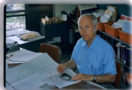

Please note: the AAS Obituaries are temporarily being hosted on this website while their full content is being ingested into the PubPub publishing platform newly adopted by the Bulletin of the American Astronomical Society. When the migration is complete, your existing links will take you to the final, migrated content. Contact peter.williams@aas.org with any questions.
Harold F. Weaver (1917-2017)
Harold F. Weaver, emeritus professor of astronomy and founder of the Radio Astronomy Laboratory at the University of California, Berkeley, died at his home in Kensington, California, on April 26, 2017. He was 99.
Harold was born on September 25, 1917, in San Jose, California, and studied astronomy at UC Berkeley through completion of a bachelor’s degree in 1940 and Ph.D. in 1942. As an undergraduate Harold met and married fellow astronomy student Cecile Trumpler, whose father, astronomer Robert Trumpler, subsequently served as Harold’s doctoral advisor. As a graduate student Harold spent three summers at Mt. Wilson Observatory, working in close association with Walter Baade. Harold held a National Research Council Fellowship at Yerkes Observatory during 1942-1943 before transitioning to war work, initially with the National Defense Research Committee at the Massachusetts Institute of Technology, and subsequently at the UC Berkeley Radiation Laboratory. He joined UC’s Lick Observatory as a staff member in 1945 and moved to a faculty position at Berkeley in 1951. Harold was instrumental in establishing the Radio Astronomy Laboratory and served as its founding director from 1958 to 1972. He also served as chair of the Department of Astronomy during the 1979-80 academic year. Harold retired in 1988, but subsequently remained very engaged in the life of the department, and came in every day until he was well into his nineties.
Harold contributed in a significant way to the emergence of the Berkeley department as an international hub of multiwavelength innovation and discovery in astronomy. His research focused on Milky Way structure and the interstellar medium, and he was an expert on statistical methods for determining three-dimensional distributions of stars and their properties. He was known as a committed teacher and mentor, who cared about his students. Harold was also an institutional leader, serving in several major roles that shaped the Berkeley campus and its activities, and as an officer with national professional organizations.
As a student Harold became interested in using statistical methods to recover the three-dimensional distribution of stars in Milky Way fields, with allowance for extinction effects on optical data. Trumpler had previously carried out a classic study using the statistics of star cluster sizes to demonstrate the existence of a distributed absorbing medium in the plane of the Milky Way. Building on these efforts, the two later authored the text Statistical Astronomy (University of California Press, 1953), which remains an authoritative reference on analysis of optical data to recover stellar distribution functions relevant for studies of Galactic structure, interstellar extinction, and stellar populations.
The emergence of radio astronomy and its potential for the study of Galactic structure attracted Harold’s attention as a young faculty member. He successfully advocated for university investment in a radio observatory, and as its first director, led planning for the new facility and secured funding from the Office of Naval Research. In carrying out site selection, Harold and his team factored in protection from line-of-sight radio interference, as well as terrain, enabling future expansion to include an interferometric array. The result was Hat Creek Observatory in northern California, with Harold personally leading lease negotiations for the property and many of the design decisions.
The new observatory was equipped with a 33-foot dish, used primarily for engineering and testing, and an 85-foot telescope, which quickly became the workhorse for cm-wavelength observations. Under Harold’s direction, studies were conducted using measurements of interstellar hydrogen and later hydroxyl (OH). A breakthrough occurred in 1965 with the discovery by Harold’s team of the first astrophysical maser. The remarkable properties of the detected lines – including very high brightness temperature, sharp features, variability, and polarization – led to an initial attribution of the emission to “mysterium” prior to its interpretation by other groups as maser amplification of OH.
The 85-foot telescope was used to carry out numerous studies of Galactic hydrogen using the 21 cm. line, including two large angular-scale surveys. The resulting data form a rich basis for probing Galactic structure as well as the morphology and physics of the interstellar medium. The depth of detail evident in these data and other 21-cm surveys remained a source of fascination and inspiration for Harold through the remainder of his career, leading him to invest considerable effort in experimenting with novel visualization and analysis methods. The results led to many stimulating conversations with colleagues and other researchers in the field. Hat Creek as a facility has remained a crucial proving ground for other innovations in radio astronomy, notably in advancing technology for mm-wavelength observations and interferometry, and in the search for extraterrestrial intelligence (SETI).
As a faculty member Harold was known as a gifted teacher and an outstanding research mentor. He took an active interest in the professional success of students and younger colleagues. Upon Robert Trumpler’s passing, Harold helped create a memorial in the form of the Trumpler Award, conferred annually by the Astronomical Society of the Pacific to recognize outstanding dissertation research in astronomy, which he saw as a means to honor his own mentor while helping launch promising young scientists in their careers. Harold was also committed to fostering the public’s knowledge of science, giving frequent talks to amateur astronomy and school groups. In his retirement he joined the board of directors for the Chabot Observatory and Science Center and assisted in a major transformation and expansion of that facility, resulting in the Chabot Space & Science Center which serves as a nexus of informal science education in the San Francisco Bay area.
Harold was known throughout his career for his sound judgment and clear insight in academic and professional matters. At Berkeley, his leadership made a lasting imprint on the university campus, through service on the Committee on Buildings and Campus Development during a crucial phase of new construction in the 1950s. One outcome was the construction of a new building, Campbell Hall, named for astronomer and University of California President William W. Campbell, which provided a congenial home for the Department of Astronomy for over 50 years. Harold provided major service over 14 years as a member of the Scientific and Academic Advisory Committee for the Livermore and Los Alamos national laboratories, chairing that body from 1981 to 1986, and reporting on its findings to the University of California president and Board of Regents. As one recognition of his research excellence and lasting service to the Berkeley campus, he was awarded the Berkeley Citation in 1988.
At the national level Harold was a leader of organizations committed to advancing research and education in astronomy. Serving on the Board of Directors for the Astronomical Society of the Pacific (ASP) from 1968 to 1971, and as president of that organization from 1971 to 1973, he was instrumental in making changes that greatly expanded the ASP’s reach and scope of activities. He was a member of the ASP’s Finance Committee for three decades and served as its chair from 1972 to 1990, providing guidance in restructuring its investment policy that enabled the ASP to acquire its first building (in a purchase negotiated by Harold) as a permanent headquarters in 1989.
Harold’s talents were also tapped by the American Astronomical Society (AAS). He was a councilor from 1954 to 1957, and held the office of acting treasurer or treasurer from 1977 to 1987. In the latter role he did a great deal to transition the society’s fiscal management to a professional standard and to improve its financial position. During this period he was also instrumental in helping the AAS move to a sustainable model for supporting its journals, and was prescient in his advocacy for innovation in publishing.
In addition to his wife, Cecile, Harold is survived by his three children: Margot Garcia of Tucson, Arizona; Paul Weaver of Kensington; and Kirk Weaver of Houston, Texas; as well as six grandchildren and 11 great-grandchildren.
Obituary written by: Joseph C. Shields, Imke de Pater, Alexei V. Filippenko.
Used with the permission of the Academic Senate of the University of California.
Photo credit: Woody Sullivan
Obituary written by: Joseph C. Shields, Imke de Pater, Alexei V. Filippenko
Additional links:
BAAS Citation: BAAS, 2017, 49, 023